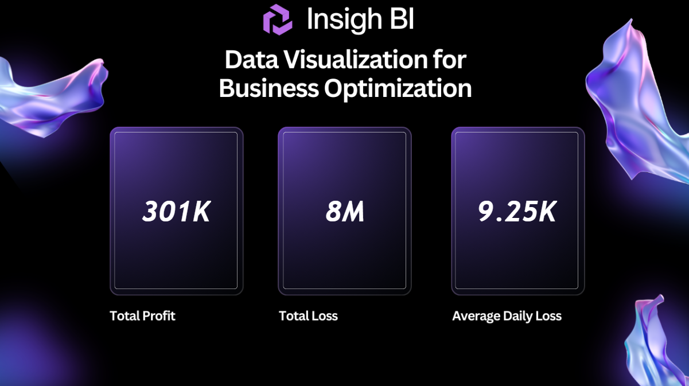

Demand &
Supply Analysis
Examining demand and supply patterns to understand availability, performance, and changes across different categories and time periods. The analysis compares demand with availability and evaluates business performance through profit and loss.
THE QUESTION
Problem Statement
Businesses need to balance product demand with available supply to maintain product availability and support efficient operations. However, raw demand and availability records alone do not provide a clear understanding of where supply gaps occur or how these differences affect business performance. It can be difficult to compare demand with availability across products, categories, and time periods, while also understanding the relationship between supply patterns and profit or loss. This project focuses on analyzing demand and supply data to identify availability patterns, understand supply gaps, and evaluate business performance across different areas.
INSIDE THE REPORT
Page Features
01
Demand & Supply Overview
Provides an overall view of demand, availability, and business performance using key measures and visualizations. The page brings together demand and supply information to make it easier to understand overall availability patterns and compare performance across the available data.

DEMAND & SUPPLY OVERVIEW
02
Demand & Availability Analysis
Examines demand and availability in greater detail to understand differences across products, categories, and time periods. The analysis also considers supply shortages and business performance, helping identify areas where demand and available supply do not align.

DEMAND & AVAILABILITY ANALYSIS
METHODOLOGY
Analytical Approach
The project began with understanding the demand and availability dataset and examining the fields required for the analysis. The data included information related to product demand, availability, unit price, and profit or loss. The dataset was explored and prepared to establish a reliable foundation for comparing demand, supply, and business performance.
Excel was used to organize and explore the available data before moving into the analytical stage. The analysis focused on comparing demand with availability across different products, categories, and time periods. These comparisons helped provide a clearer view of where supply levels aligned with demand and where potential supply gaps occurred.
The prepared data was then transformed into an interactive Power BI report. DAX measures were created for important metrics including average daily demand, average availability, total profit, total loss, and supply shortage. These measures allowed the dashboard to present the key aspects of demand, availability, and business performance together.
The final report brings these measures and comparisons together through interactive Power BI visualizations. The dashboard allows demand and supply patterns to be explored across different categories and time periods, while profit and loss measures provide additional context for understanding overall business performance.
THE BUILD
Tools & Technologies
GET IN TOUCH
Let’s Connect
Interested in working together, discussing a project, or simply connecting? I’d love to hear from you!
samiafathima28@gmail.com